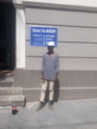
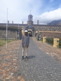
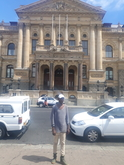

With almost 200 different nationalities calling it home, and a massive 90% of the population coming from outside the country, Dubai is arguably one of the most cosmopolitan cities in the world. In contrast to cities like New York or London that have been inhabited for hundreds of years, Dubai’s expats are mainly first-generation, bringing with them a host of different cultural traditions. The diversity on show in the city is unparalleled.
| Italian | English Phrase |
|---|---|
| Ciao | Hello |
| Mondo | World |
| Io sono vivo | I am Alive |
District Six
 District Six is a former inner-city residential area in Cape Town, South Africa. Over 60,000 of its inhabitants were forcibly removed during the 1970s . The area of District Six is now partly divided
Castle of Goodhope
 Castle of Good Hope is a bastion fort built in the 17th century. In 1936 the Castle was declared a historical monument. It is best preserved example of a Dutch East India Company fort.
City Hall
 Cape Town City Hall is a large Edwardian building built in 1905. It is located on the Grand Parade to the west of the Castle. The building was designed as the result of a public competition.